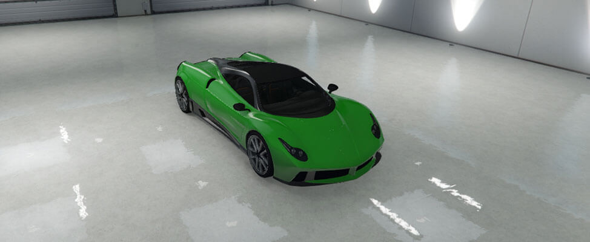

El Osiris es un vehículo superdeportivo que aparece en Grand Theft Auto V con la Actualización Dinero Sucio. Es fabricado por Pegassi. Se trata de un superdeportivo con detalles parecidos al Cheetah aunque una diferencia es el frontal, el cuál luce más recto y largo, similar al de un T20. Las luces son cortas y rectas.